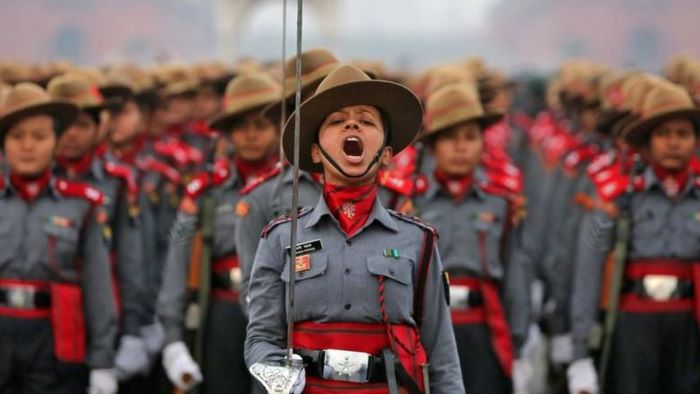

Entries to join Indian Armed Forces(WOMEN)
Indian Army Entry Schemes for Women
1.Combined Defence Services Exam
The Combined Defence
Services (CDS) Examination is conducted twice a year by the Union Public Service Commission for recruitment into
the
Indian Military Academy (IMA), Officers Training Academy (OTA), Indian Naval Academy (INA)and Indian Air Force
Academy(AFA).
WOMEN ELIGIBILITY: Girls are only eligible for Officers Training Academy (OTA).The other three the
IMA-Indian Military
Academy , AFA-Air force Academy and the NA-Naval Academy, are only boys
2. NCC Special entry:
You can write the NCC Special entry exam if you are a NCC
Women Cadet and the qualification needed is that the candidate should have 19-25 years of age and the education
qualification needed is that the candidate must have completed a Degree with 50% aggregate.
3. JAG entry:
This entry is mainly for the Law Graduates as the candidate who has an age
limit between
21-27 years of age and also having the education qualification of completed LLB degree is eligible for applying
for this exam.
Entry Scheme Women: Graduate UPSC
4.Short Service Commission Non Technical Women (SSCW Non
Tech)
It is notified by UPSC under the aegis of CDSE in July and November.
Age limit 19 years to 25 years, the candidate must be a graduate from a qualified university of unmarried
status.
Application: Apply online on UPSC website as per dates given in the notifications in the months of July and
November.
The dates for SSB would be likely in June, July and Nov, Dec.
Training for the same will commence in October and April. Training Academy – OTA Chennai, Duration of Training –
49 weeks
Entry Schemes Women – Graduate Tech Entries:
5.Short Service Commission (Technical)
Women
It is notified by the Directorate General Recruiting, AG Branch in June, July, December and January.
Age limit is 20 to 27 years, and must be of unmarried status.
Candidate needs to have an engineering degree.
Application: Apply online on Official website of DG Rtg www.joinindianarmy.nic.in as Notified in the Notification.
The dates for the SSB would be in Dec-Jan and June-July. Training usually commences in April and October.
Training Academy – OTA Chennai, Duration of Training – 49 weeks
Opportunities for Women in Air Force
Air Force Common Admission Test (AFCAT)
is a written exam conducted by Indian Air Force twice every year to induct officers in the IAF.
The written exam is followed by Air Force Selection Board Interview for shortlisted candidates.
WOMEN ELIGIBILITY: The air force entry is possible for the girls through the AFCAT-Air Force Common Admission.
The candidates should be a graduate from any stream with physics and Maths in 10+2.
AFCAT Entries
6.Flying branch:
Women candidates of age 19 to 23 years (as per notified in the advertisement) can opt for flying branch.
Female candidates have the opportunity to fly transport aircrafts or helicopters but they are not eligible for
fighter aircrafts.
To apply for this entry, a candidate should be having a Graduate degree in any
discipline from a recognized university with aggregate of 60% marks and have passed Maths and Physics at 10+2
level OR B.E/B.Tech degree from a recognized university with aggregate of minimum 60% marks
7.Technical Branch:
Female engineering candidates of age 18 to 28 years can opt for
technical
branch. There are two types of technical service whose educational qualification conditions are given below:
1.Aeronautical Engineer (Mechanical): Minimum four year degree course from a recognized university with
aggregate of
minimum 60% marks and qualification in at least eight subjects out of eighteen as per notified in the
advertisement OR
cleared Section A and B exam of Associate membership of Institution of engineers or Aeronautical society of India
in
regular courses
2.Aeronautical Engineer (Electrical): Minimum year degree course from a recognized university with
aggregate of minimum
60% marks and qualification in at least eight subjects as per notified in the advertisement OR cleared Section A
and B
exam of Associate membership of Institution of engineers or Aeronautical society of India or graduate membership
exam of
the Institute of Electronics and Telecommunication Engineers in regular courses
8. Ground Duty Branches:
For graduates: 20 to 23 years, Post Graduates: 20 to 25 years,
LLB: 20 to 26 years, M.Ed/ PhD/ CA: 20 to 27 years.
There are three types of services in Ground Duty Branches whose educational qualification conditions are given
below:
1.Administration and Logistics: Graduate in any discipline from a recognized university with aggregate of
60% marks
OR a Post Graduate degree/ diploma in any discipline from a recognized university with aggregate of minimum 60%
marks
2.Education: Post Graduate degree in any discipline with aggregate of minimum 50% marks
3.Accounts: Graduate degree in any commerce with aggregate of minimum 60% marks OR a Post Graduate degree/
diploma in
Commerce (M Com) / CA / ICWA with aggregate of minimum 50% marks
Non-AFCAT Entry:
9.Meteorology Branch:
In this entry, candidates are short-listed and
called for SSB interviews at Air Force Selection Board. Age group in this entry is 20 to 25 years and 27 years
for PhD candidates.
To be eligible for this entry candidates must be having a Post graduate degree in any science stream / Maths /
Statistics / Geography / CS / EVS / Physics / Geo-physics etc. with minimum 50% aggregate and have scores 55%
marks
both in Maths and Physics at graduation level. Final year students can also apply for it.

10.Indian Navy Women Entry Schemes
Presently the women are recruited for following branches of the Navy as Officers :-
1.ATC
2.Observer
3.Law
4.Logistics
5.Education
6.Naval Architecture
Types of Entry for women in Navy
Short Service Commissioned Officer Under University Entry Scheme (UES):
The women candidates who has
an age limit of 19-25 years of age and the education qualification of completed B.E/B.Tech degree in naval
architecture / Mechanical / Civil / Aeronautical / Metallurgical / Aerospace engineering with aggregate of
60% are eligible.
SSC Naval Architecture:
The candidate appearing for this exam should have 21-25 years of age and the
education qualification
needed is that the candidate should have completed B.E/B.Tech in Computer Science, IT, Electrical, Electronics,
Mechanical OR
M.Sc in Physics/Maths/Computer application with atleast 50% marks.
SC – ATC:
The candidate appearing for this exam should have 19 – 25 years of age and the education
qualification needed is
that the candidate should have completed B.E/ B.Tech (Any Discipline) with 60% marks from a recognized University/
Institution
with Maths & Physics at 10+2 level.
SSC – Observer:
The candidate appearing for this exam should have 19-24 years of age and the education
qualification needed is
that the candidate should have completed B.E/ B.Tech in any discipline with minimum 55 % marks from a recognized
University/
Institution with Maths & Physics at 10+2 level.
SSC Logistics:
Age limit -19 – 25
Logistics Cadre
1.B.Tech/ B.E (Any Discipline)
2.MBA with First Class
3.B.Sc/ B.Com/B.Sc(IT) with First Class and a Post Graduate Diploma in Material Management/ Finance/ Logistics/
Supply Chain
Management.
SSC Education:
Age limit: 21 – 25
1.B.E/ B.Tech/ M.Tech in IT/ Computer Science Engg / Electrical & Electronics/ Electronics & Telecommunication/
Electronics &
Instrumentation / Mechanical /Electronics and Communication/ Instrumentation/ Telecommunication.
2.M.Sc (Maths) with Physics in B.Sc / M.Sc (Physics) with Maths in B.Sc / M.Sc (Operational Research)/ M.Sc
(Analysis).
3.MCA (Physics or Maths at Graduation Level).
4.M.A (English) / M.A (history).

11. Women in Indian Coast Guard
1.Assistant Commandant (GD)-SSA
General Duty (Short Service Appointment for a period of 08 years, which may be extended to 10 years and further
extendable upto
14 years) 21-25 years of Age (5 years relaxation for SC/ST and 3 years for OBC) Bachelor’s Degree in any
discipline of any
recognized university by any Central / State Government / UGC with Mathematics and Physics as subjects upto class
XII of 10+2+3
scheme of education
Height 152cms, Weight Proportionate to Height, Eye sight 6/6 & 6/9 without glasses
Notification: Advertised by Indian Navy through leading newspapers.
2.Assistant Commandant
(GD-P-CPL) SSA
(Male/Female)
General Duty Branch (Pilot – Commercial Pilot License – Short Service Appointment for a period of 08 years, which
may be
extended to 10 years and further expandable upto 14 years)
19-25 years (5 years relaxation for SC/ST and 3 years for OBC)
12th or equivalent and should possess current Commercial Pilot License on the date of submission of application.
Height Min 162.5 cms Max 197 cm, Leg Length Min 99 cms, Weight Proportionate to Height, Eye sight 6/6 without
glasses
3.Assistant Commandant (Law)
Law Branch
21-30 years (5 years relaxation for Govt. servant)
(i) A degree in Law Desirable
(i) A postgraduate degree in Law.
(ii) Knowledge / Experience Assignment connected with International Law/Maritime Law
Height 157 cm/152cm(M/F) Weight Proportionate to Height, Eye sight 6/6 and 6/12 (with glass), 6/60 (without glass)
12. UPSC NDA Exam:
A written petition was filed by Kush Kalra in the Supreme Court to
allow women
to appear for NDA in 2021. The petition raised objections against the issue of violation of Articles 14, 15, 16,
and 19
of the Constitution of India by not allowing the desired female candidates in the NDA Exam.
In response to the same, Justices Sanjay Kishan Kaul and Hrishikesh Roy passed the interim order allowing the
female
candidates to be a part of the NDA in 2021. The decisions regarding the specifications like age criteria, nature
of training,
intake strength, training standards, and medical and physical standards were rested upon the Ministry of Defence.
UPSC prepares a list of candidates who obtain the minimum qualifying marks in the written examination as fixed
by
the Commission at their discretion. Such candidates shall appear before a Services Selection Board (SSB) for
Intelligence
and Personality Test where candidates for the Army/Navy wings of the NDA and 10+2 Cadet Entry Scheme of Indian
Naval
Academy will be assessed on Officers Potentiality and those for the Air Force in addition to the above will have
to
qualify Computerised Pilot Selection System (CPSS).
Eligibility Criteria for NDA
Age: 6 ½ to 19 ½ yrs as of first day of the month in which course is due to commence
Qualification: 12th Class of 10+2 System of Education/Equivalent for Army and with Physics and Maths for
AF/Navy
Training Academy: NDA , Khadakwasla, Pune
Notification: Conducted twice in a year by UPSC, notification is released around May/Jun and Dec
